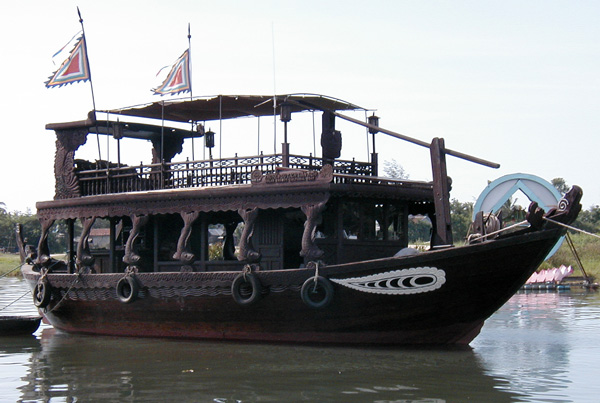
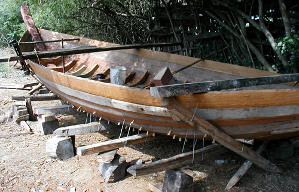
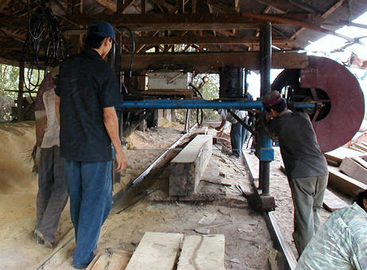
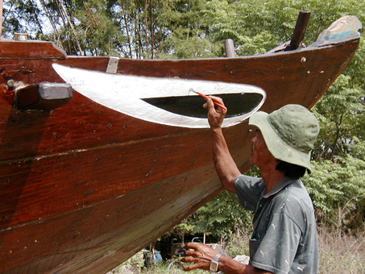
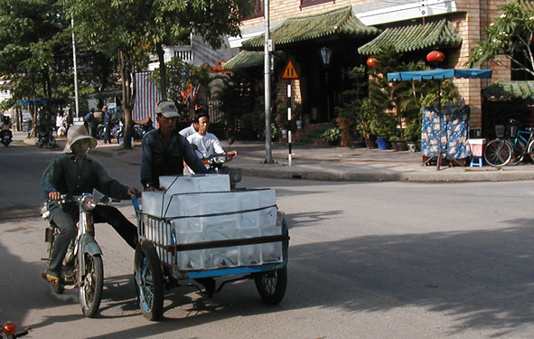
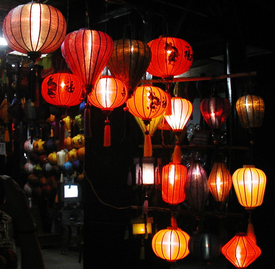
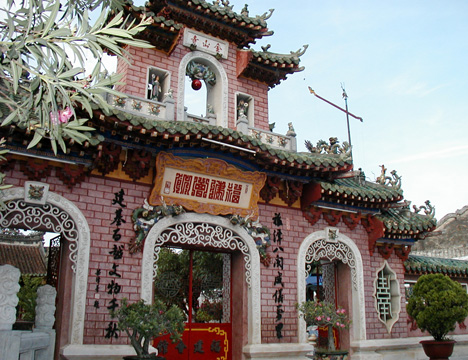
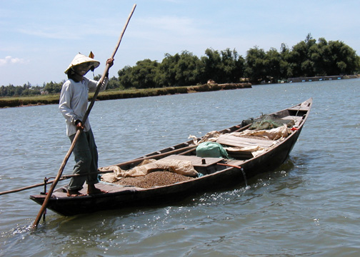

Viet Nam Trav-E-Logs©
| Hoi An
sent 4 July 2003 |
 |
| back: Nha Trang | Hoi An by the Sea |
================================= I’ve been so busy traveling, that some of the episodes have yet to be written. Another recurring problem is that some guesthouses have no electrical outlet in the room, so a suitable public place to sit down and write must be found. This broadcasts my possession of an expensive item --and seems to be a conversation magnet: Are you connected wirelessly; Are you a famous author; What's it like traveling with a laptop? The truth is, maybe the fins and PDA could have been left home, but I don’t want to give up my laptop! Especially to support the digital camera; I’m able to review photos daily, while others have to wait until they get a CD burned at a local Internet café, and pay again to review the pictures for quality, focus, subject matter, etc. =================================
May 23 – 27, 2003
Hoi An (Faifo) is an old trading center where Dutch, Indian, Japanese, and Chinese merchants established permanent residence. It is one of the few places in Indochina that was not extensively bombed in the twentieth century, so several historically significant buildings survive. It is designated a world Cultural Heritage site. To enter many of the historic buildings, the tourist must purchase a pass for $3.50, good for five places (with restrictions) out of 15 or so. Would anyone be surprised to know I went to a traditional music and dance performance?
The first two nights in town are at a pretty nice hotel, as I’ve doubled up with Steve, another traveler. But as he heads north, I decide to stay a few more days and have to look for another hotel. Remembering the old adage, “you’ll never know unless you ask”, I boldly walk into one of the best hotels in town with swimming pool, and tell them I’m looking for a single (room), want to use their pool, but can only pay about a third of their normal price. No problem, they have several lower-priced rooms above the older wing, complete with pool privileges! The room even has a small table, which can be used for typing.
One day I rent a bike and head out of town. That is really an enjoyable part of backpacking overseas. Out comes the camera and tripod, and it’s not hard to fill up a card or two. Digital Photography: Take three times the number of pictures as before, and plan on erasing a lot of pictures. Sometimes the choices are not easy to make. This bike trip starts me along the river, where I see a small lumber mill, which supports the boat yard next door. Boat repair as well as boat building is taking place. Fresh paint is being applied to a set of eyes.... Then I head inland, and take several pictures of hut construction. Lots of bamboo construction, but mats seem to be fastened in place, then framing added to hold them firmly in place. This is in contrast to what I saw on the island of Flores where framing was first put up, then pre-fabricated woven bamboo panels put in place. I’d still like to happen on a hut during construction. Also got some pictures of transportation methods. This one showing ice being delivered, also shows cooperation, a street intersection in a 500-year old city, and a three-wheeled bicycle.

Hoi An is a great place to kick back, relax, and have some clothing made-to-fit. Even I couldn't resist the temptation; had a custom pair of pants made ($3) for use while snorkeling to keep my legs from getting sun burned. I also spent a day collecting material, then had my day sack modified with both waist and chest straps. A couple from Holland that arrived with me ended up staying a full week, both having a suitcase of clothing made. Silk, cotton, wool.
Hoi An is also known as the lantern capitol of Viet Nam. Lanterns? You know, like paper jack-o-lanterns strung up in places of business as a colorful attraction. Many Kodak moments, without the advertisements. Returned that evening for illuminated shots.
The last snap shot is an all purpose boat of the type nearing completion at the boat yard.


An important side trip is to the ancient temple complex at My Son. That will be covered in the next Trav-E-Log.
Bill
------------------------------
Email me at: “juno.com” preceded by an “@” and “dancer2SEAsia”
"Travel is Fatal to Bigotry, Prejudice, and Narrow-minded ness" .... attributed to Mark Twain
| next: My Son |
| back: Nha Trang |